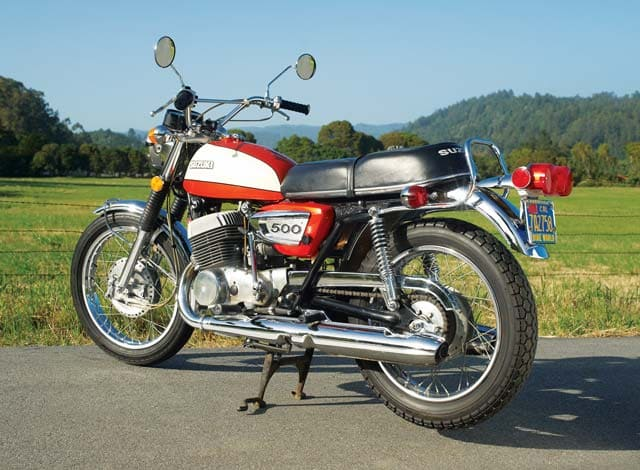
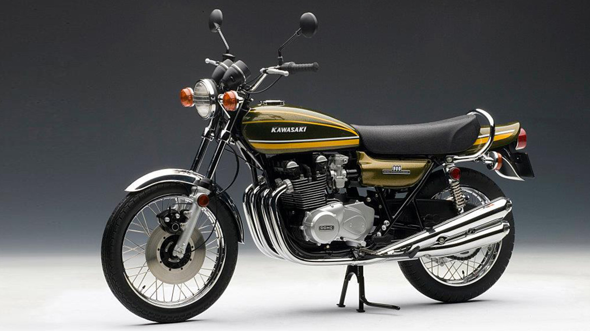
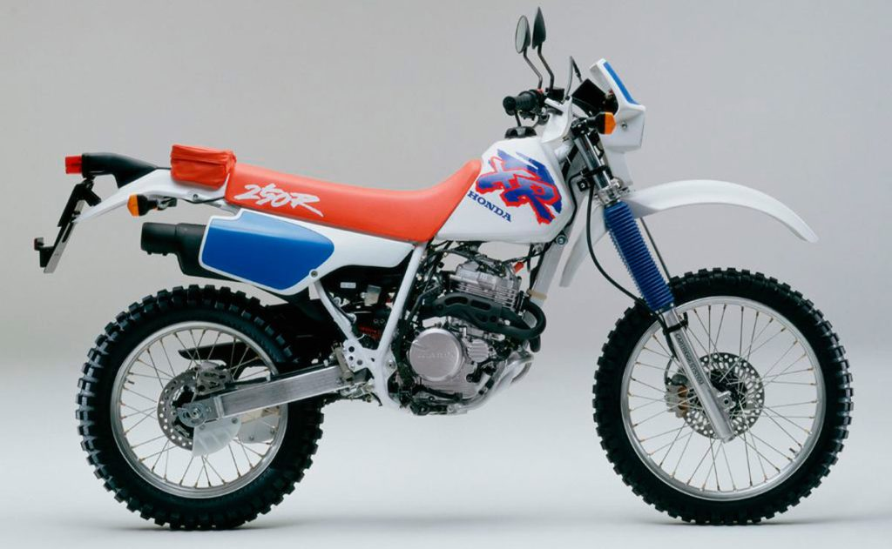
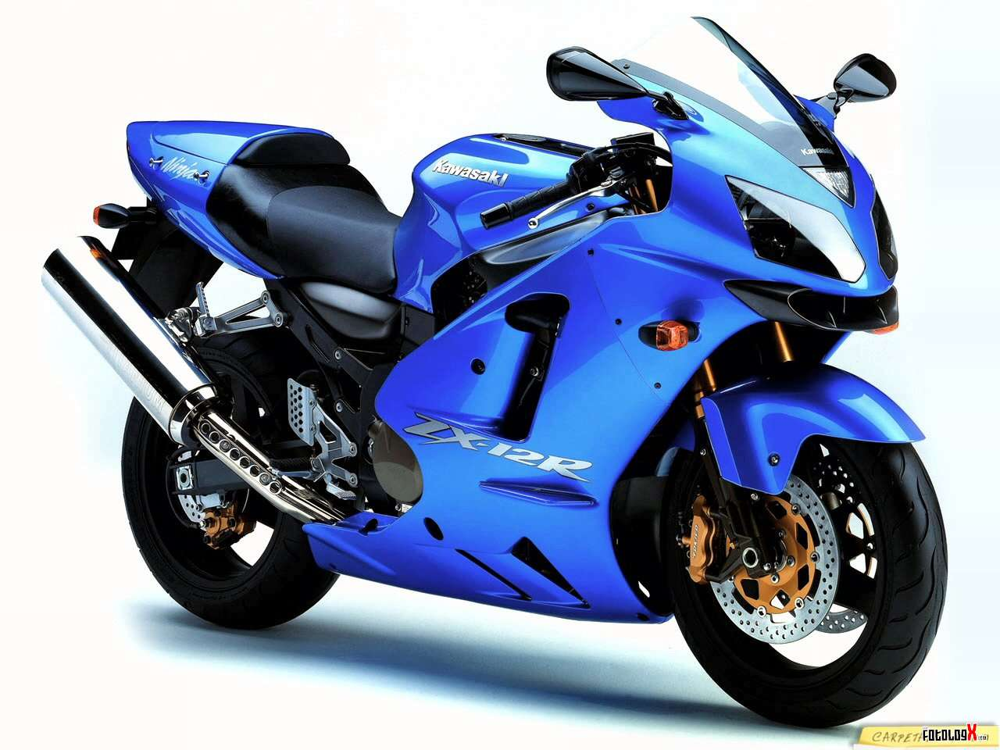

| Historia |
Creacion | Evolucion |
Origen Y Avances |
Curiosidades |
Datos |
Empresas |
Modelos |
Formulario |
Galeria |
El motociclismo ha evolucionado mucho desde sus inicios en la década de 1870. La primera motocicleta fue inventada por Gottlieb Daimler y Wilhelm Maybach en 1885, y fue conocida como la «Draisine» o «motocicleta de pedal». Sin embargo, no fue hasta la década de 1890 cuando las motocicletas se volvieron más populares y se comenzaron a fabricar en masa. En la década de 1900, las motocicletas se volvieron más populares entre los jóvenes y se utilizaron para carreras de velocidad. En 1907, se fundó la Federación Internacional de Motociclismo (FIM) y se comenzaron a organizar carreras de motociclismo en todo el mundo. En la década de 1920, las motocicletas se volvieron más grandes y más potentes, y se introdujo la transmisión automática. Durante la Segunda Guerra Mundial, las motocicletas se utilizaron ampliamente en el ejército debido a su capacidad para moverse en terrenos difíciles. Después de la guerra, las motocicletas se volvieron más populares entre los jóvenes y se utilizaron para carreras de velocidad y para el transporte diario. En la década de 1960, las motocicletas se volvieron más grandes y más potentes, y se introdujo la suspensión delantera y trasera.
En la actualidad, el motociclismo sigue siendo una forma popular de transporte y entretenimiento. Se organizan carreras de motociclismo en todo el mundo y se han desarrollado muchos accesorios y equipos de protección para mejorar la seguridad al conducir una motocicleta. La Evolución del Motociclismo.

En los años 70, las motocicletas comenzaron a estar disponibles para los consumidores de la calle y su popularidad se disparó. En este periodo surgieron nuevas categorías de competición, como el motocross, una modalidad de la competición que se desarrollaba en circuitos al aire libre con rampas, saltos y obstáculos. También se comenzaron a realizar competiciones de trials, un deporte que consiste en realizar circuitos con obstáculos sin poner los pies en el suelo. En los años 70, algunas marcas de motocicletas probaron con un diseño distinto, como la Kawasaki Z1, que se considera como la primera moto de “superbike”. En el mundo de las carreras, se desarrolló una competición específica para este tipo de motocicletas: el Campeonato Mundial de Superbike. El estilo de motocicleta más popular en la época era la Café racer, una moto de carreras británica que se convirtió en la elección número uno de los jóvenes rebeldes.


En los años 80, los fabricantes de motocicletas comenzaron a experimentar con nuevas tecnologías. Se crearon motocicletas con refrigeración líquida, sistemas de inyección electrónica y suspensión ajustable. Estos avances permitieron una mejora significativa en el rendimiento y en la eficiencia de las motocicletas. En este periodo, también se popularizaron nuevas modalidades de competición como el Supercross, un deporte que se hizo muy popular en Estados Unidos. En el mundo de las carreras de velocidad, Ángel Nieto ganó su doceavo título en el Campeonato Mundial de Motociclismo. En los años 90, la apariencia de las motocicletas comenzó a cambiar. Los diseños tradicionales de estilo café racer y deportivo dieron paso a motocicletas más grandes y pesadas, conocidas como touring bikes, que permiten largas distancias y mayor comodidad en el viaje. Además, se desarrollaron nuevas modalidades de competición como el Supermotard, un deporte que combina motocross y circuitos asfaltados. En el mundo de las carreras de velocidad, el Campeonato Mundial de Motociclismo vivió una era dorada liderada por Mick Doohan, que acumuló cinco campeonatos mundiales seguidos.

En la actualidad, el motociclismo sigue evolucionando. Las motocicletas deportivas modernas tienen un rendimiento que es difícil de igualar, y los sistemas electrónicos de ayuda como el frenado antibloqueo y el control de tracción hacen que la conducción sea más segura y que los pilotos se destaquen aún más. En cuanto a la competición, el Campeonato Mundial de Motociclismo sigue liderando el deporte, con cinco categorías diferentes: MotoGP, Moto2, Moto3, MotoE y el recién introducido Campeonato del Mundo de Supersport 300, que se une al Campeonato Mundial de Superbike. Conclusión En conclusión, la historia del motociclismo ha sido fascinante. Desde su invención en Alemania en 1885 hasta la actualidad, ha evolucionado tecnológicamente y ha ganado un gran número de seguidores en todo el mundo. Desde las competiciones de velocidad, hasta los circuitos de motocross, hay algo para todos los aficionados al motociclismo. Y con la innovación y desarrollo constante de nuevos diseños y tecnologías, el motociclismo continúa siendo uno de los deportes más emocionantes y apasionantes del mundo.